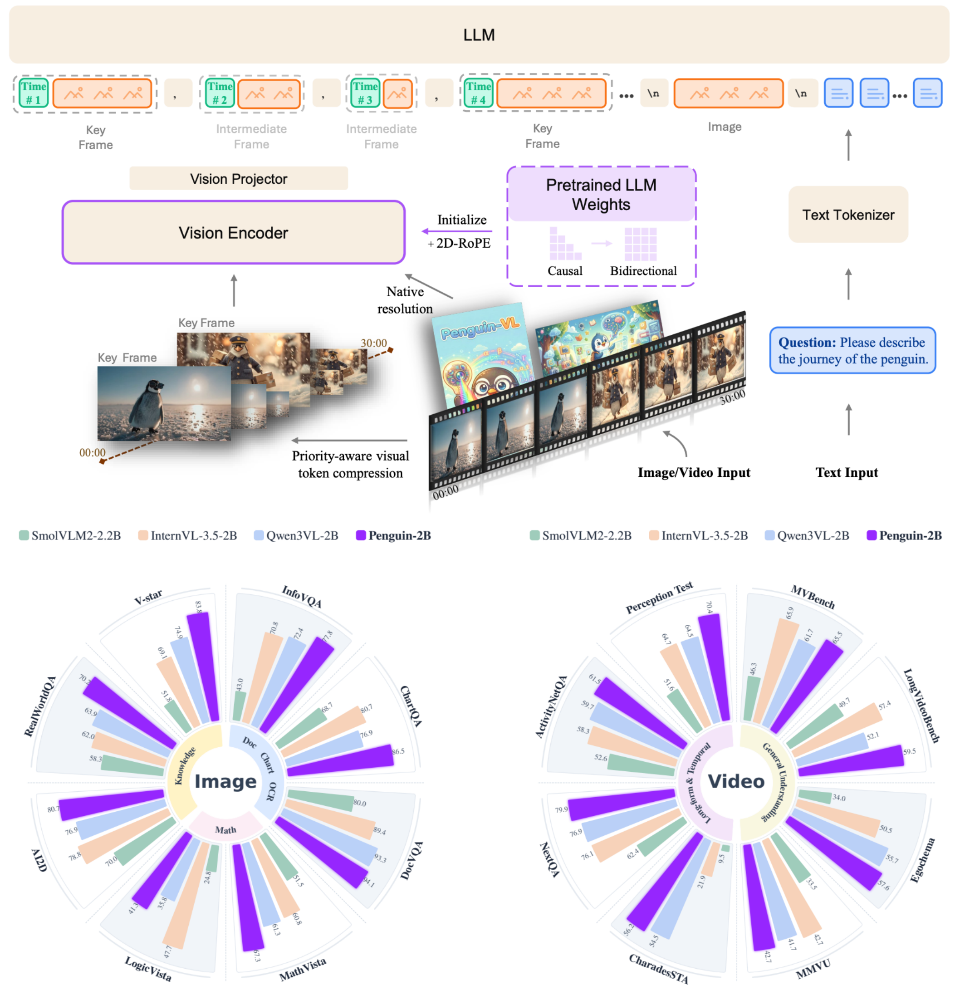
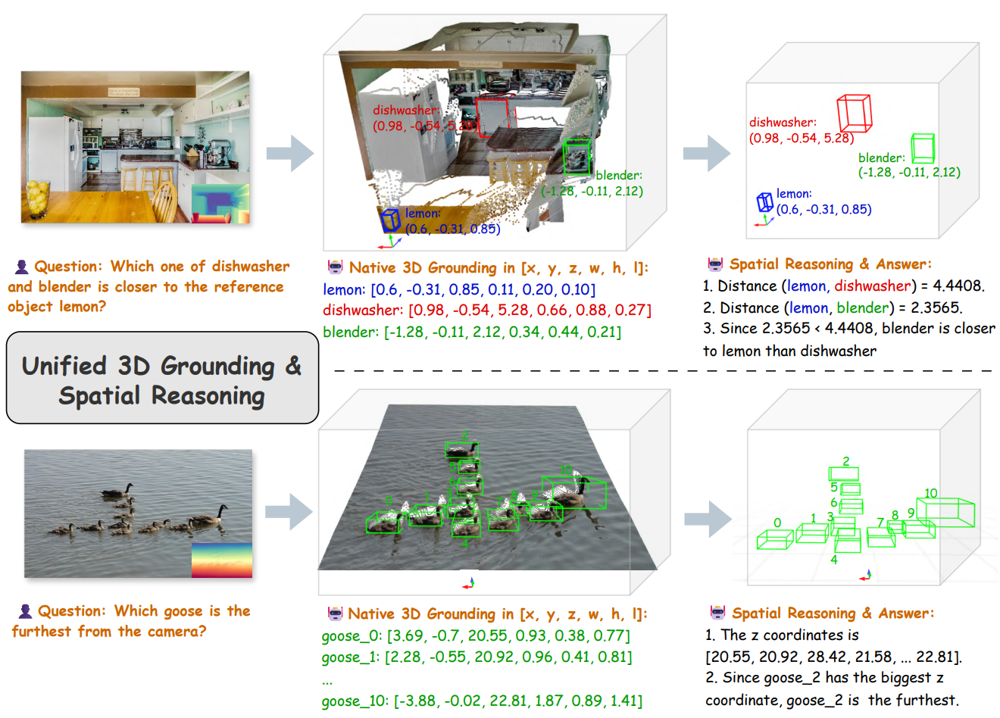
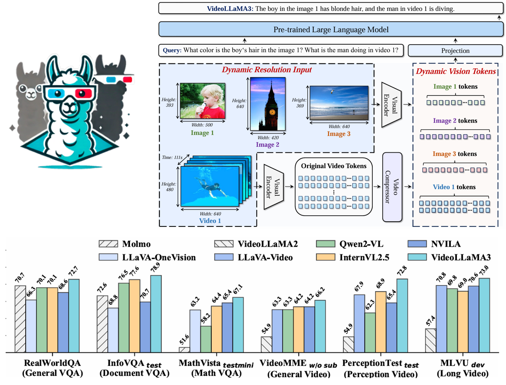
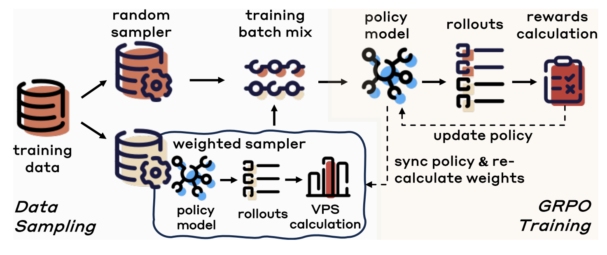
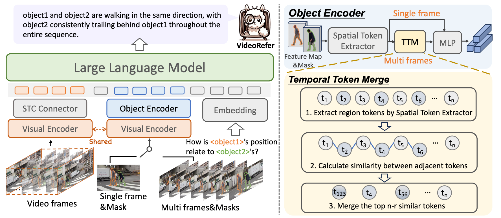
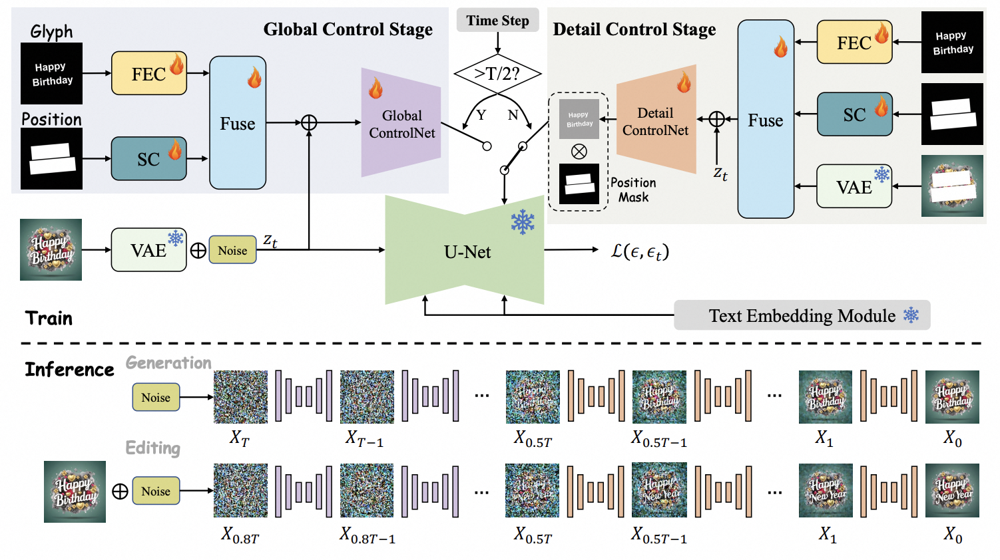
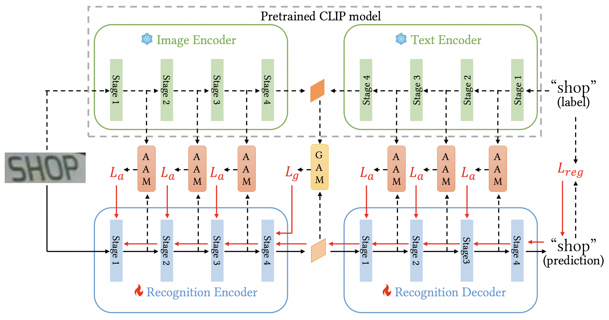
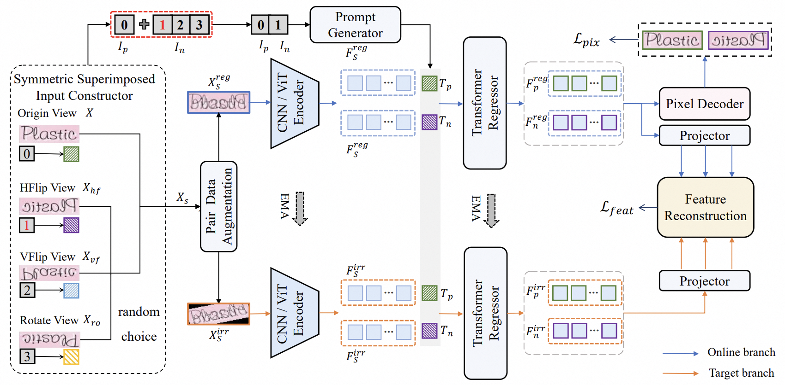
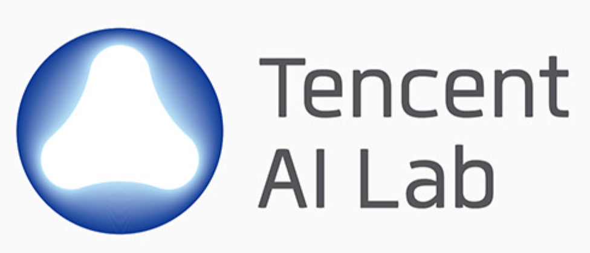

About Me
I hold a Master's degree from the University of Science and Technology of China (USTC), where I worked under the guidance of Prof. Hongtao Xie. I completed my Bachelor's degree at Northwestern Polytechnical University (NWPU).
My current research interests focus on vision-language-action (VLA) models, vision language models (VLM) and unified understanding and generation. Earlier in my career, I concentrated on scene text recognition and editing, exploring both self-supervised and semi-supervised learning approaches.
Publications & Preprints

Penguin-VL: Exploring the Efficiency Limits of VLM with LLM-based Vision Encoders
ArXiv, 2026

N3D-VLM: Native 3D Grounding Enables Accurate Spatial Reasoning in Vision-Language Models
ArXiv, 2026



Videorefer suite: Advancing spatial-temporal object understanding with video llm
CVPR, 2025


Choose What You Need: Disentangled Representation Learning for Scene Text Recognition Removal and Editing
CVPR, 2024



Working Experience
-

Tencent AI Lab | ShenZhen | Jul. 2025 - PresentSenior Research EngineerTopic: Multi-modal Large Language Model, Image/Video Understanding and Generation -
Alibaba DAMO Academy | Hangzhou | Jun. 2024 - Jul. 2025Research InternTopic: Multi-modal Large Language Model, Image/Video Understanding, Embodied AIMentor: Xin Li, Lidong Bing
Services
- Conference Reviewer: NeurIPS, ACM MM, ICLR, ICML, TMM
Honors
- Outstanding Graduate of USTC and Province Anhui, 2025
- HuaWei Scholarship, 2023
- Outstanding Graduate of NWPU, 2022 (top 5%)
- National Scholarship, 2024, 2021, 2020, 2019
- Outstanding Student of NWPU, 2020 (top 1%)